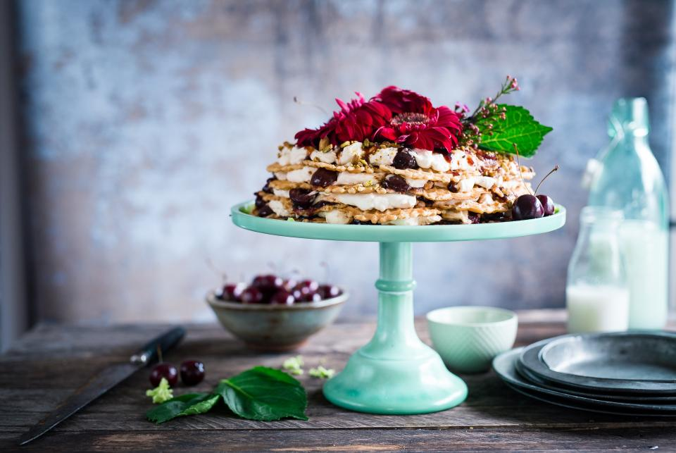
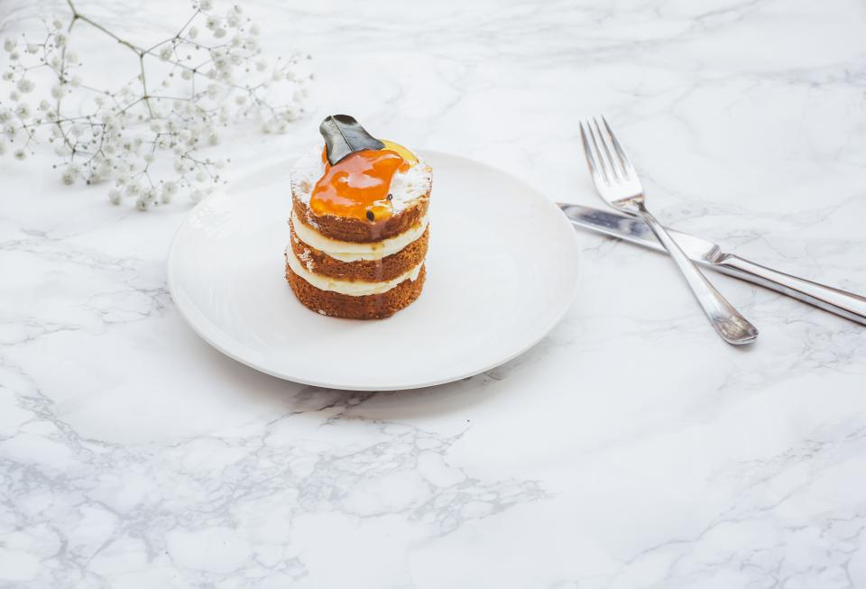

GET STARTED WITHIN
Learn How To Bake In 5 Easy Steps
No doubt, you need more one pot dinners in your life like this easy Bosnian-style chicken and rice. This recipe is made all over the world with countless variations on the theme.

Do you know how to level a cake?
After years of cake successes and flops, I’m confident in this homemade vanilla cake. During my recipe testing, I combined my white cake recipe and naked cake recipe. These are two reader favorites and I knew they’d be the best starting point.
Vanilla Cake Success Tips
I always eyeball the amount of frosting between cake layers, but I measured when I decorated the pictured cake. The vanilla buttercream recipe below yields about 6 cups of frosting. I recommend you use about 1.5 heaping cups of buttercream between each cake layer and reserve the last 3 cups for outside the cake.
